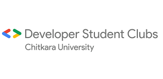

Chitkara University - Chandigarh

About
Welcome to Developer Student Club at Chitkara University. Developer Student Clubs (DSC) 🎉 are community groups for students from any academic background in their undergraduate or graduate term. By joining a DSC, students build their professional and personal network, get access to Google Developer Resources, and work together to build solutions for local problems in a peer - to - peer learning environment.🔥
What we do :
Hands-on coding workshops (Beginner and Experienced)
Build side projects
Compete in the Solution Challenge
Networking events
Google Cloud Study Jams
Much much more!
GDG / GDE expert talks
How to join :
Create a profile
Join the Chapter
Get a confirmation email
Attend events
Email us at cse.dsc@chitkara.edu.in for questions and more information!
Content from GDSC Chitkara